For the first question, Mr. Churchill, what kind of man are you? Although you are known as the defender of humanity against the dark events of the years 1939-45, and for my part, you are a great man who knew how to protect humanity and your country, you are a man with several labels.
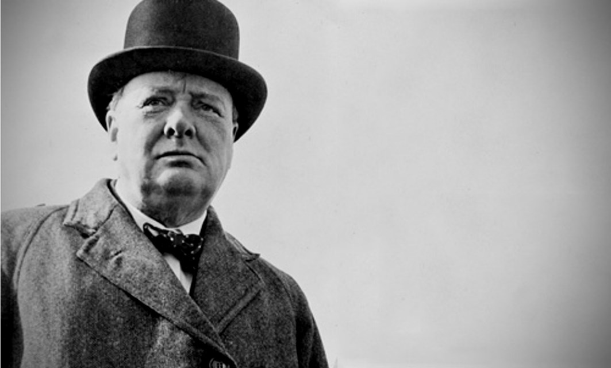
For more information, click here!
Hi, i'am Winston Churchill!
I am a little of everything at once, it is difficult to judge oneself. But I think you can not be a good politician if you just be a politician. Openness must be an indispensable quality of a man, especially if he has the responsibility to command other men. I will say to my contemporaries, do not try to be a great man, just be a man and let the story take care !!
Master Churchill, are you a painter? A politician ? An outstanding commander? But maybe you're a philosopher? A literary? A humanist?
My birth
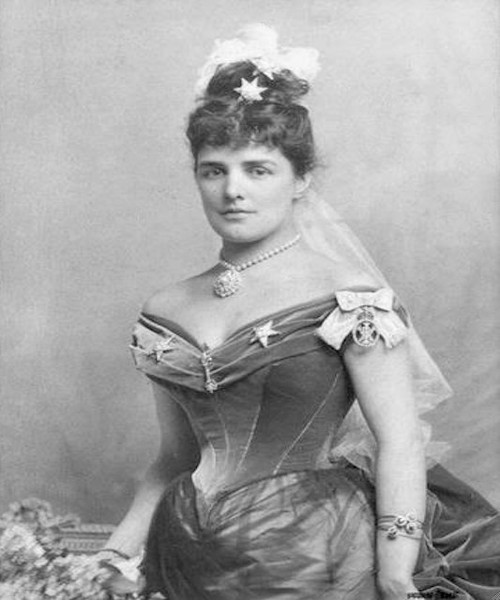
For more information, click here!
Hi, i’am Lady Randolph Spencer-Churchill.
My son, from his earliest childhood, had an overflowing imagination!
Very well, Master Churchill, your life began in 1874, you were born in Woodstock in Oxfordshire, in the United Kingdom?
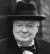
Indeed I was born in the Blenheim Palace, I remember my birth. I opened my eyes in a room that was to serve as a cloakroom for women. I heard instruments in the distance. I was born during a prestigious ceremony that my father had prepared. My mother put her soft eyes on me and smiled at me for long minutes.
Your mother was Lady Randolph Spencer-Churchill, born Jennie Jerome, in New York on January 9, 1854.
Yes, my mother had known my father six months before I was born. They loved each other right away.
Your father was a British statesman, Lord Randolph Henry Spencer-Churchill. He was the son of John Spencer-Churchill, the Duke of Marlborough.
Indeed, my father was a tough, serious man. He was a man whose political career was much more important than his family life. He lived only for his career.
Your father and your mother might like to say a few words?
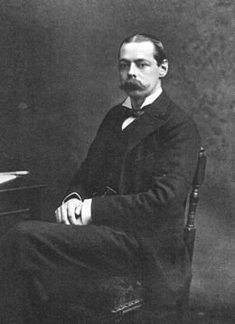
For more information, click here!
Lord Randolph Henry Spencer-Churchill
I gave my son a mission, the mission to be what I could not be! He was to be the British prime minister.
My childhood
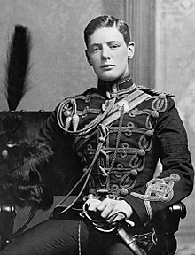
For more information, click here!
Little Churchill
Professor! I have several gifts. I have a hallucinatory memory, every detail, every fact and every face being printed in my memory. This gift, I will use it for my personal success. Plus, I have an overflowing imagination. I can think of 500 ideas just before having breakfast! So it's not a lack of concentration, but simply a constant dispersion of my interest in your subjects!
Your childhood was at first, a little complicated. You returned at the age of 7 to the prestigious St.George's School in Ascot. But you left shortly after, is that right?
This school was difficult, the separation with my family, the discipline was too strict for a child. In addition, I suffered some violence and my nurse Elizabeth Anne Everest warned my parents quickly.
At 9, you are placed in a less strict boarding school, that of the Brighton Demoiselles Thomson, where I think you did all your schooling?
Yes it was much less strict than the first school but the level was much lower. For me, it was really what I needed to progress, my grades were not the best in the class!
Afterwards, your father wanted you to enter Eton, a very prestigious school, but you chose his great rival Harrow School. You entered at the age of 13 in 1888?
Yes, this school being less rated, I felt better at the disappointment of my father! I stayed there until I was 18 years old. I had excellent marks in English and history, and I was a champion of the fencing school. My passion was history especially French history, I admire Napoleon and Joan of Arc, two very important characters for me, because they were able to recover a declining country.
We could find a description that you faced a teacher. You can look left!
My military career
Later you hesitated between an ecclesiastical career and a military career. Have you failed twice at the Royal Military Academy Standhurst?
I was able to go back after the third time by taking classes in order to be able to pass the competition. But my ranking was not extraordinary. I was 92 out of 102. However for me, the military career was to be a mere stepping stone for a future political career.
On February 20, 1895, you took your first command as second lieutenant of the 4th Queen's Own hussard, a year still complicated for you, the loss of your father and your nanny. Then your baptism of fire in Cuba, can you tell us about it?
his year was a turning point for several reasons, I had my diploma and a place quite respectable 20th out of 130th. Subsequently, I had walked for the first time the lands of America. I followed Willian Bourke Cockran, an American politician. It was very rewarding. My entire political career was influenced both ideologically and successively.
Then I became a war reporter and the cuba war of independence was really my first fight. I kept the taste of Habanos, Cuban cigars.
Subsequently, you made several interventions in India where you became an officer. In Malakand where you volunteered to go in combat. You had the Sudan campaign, and you intervened during the Boer War. What experience did you gain?
I especially learned about human worth, to respect it and to protect it. I also learned that some wars had no justification and that sacrificing men for it was totally immoral.
Your companions have left you a message!
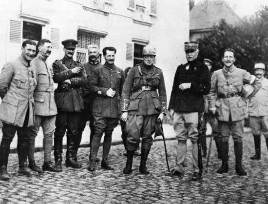
For more information, click here!
The companions of Churchill
When we were under enemy fire, Winston Churchill really took all the risks. He was the first to fight. Never, he was hurt, to believe that he was divinely protected. But, in addition he tried when it was possible to make the least possible victims. The lives of his men made sense to him. Once under heavy fire from the enemy, without a helmet and on top of a knoll, in sight of the enemy, he led the retreat of the troops of our company. Here is his courage and luck!
My political career
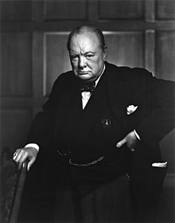
For more information, click here!
My vision of the World
In England everything is allowed except what is forbidden. In Germany everything is forbidden except what is allowed. In France everything is allowed, even what is forbidden. In U.S.S.S. everything is forbidden, even that which is allowed.
Afterwards, you start your political career, you were the trade minister at the start. Then in 1909, you were Minister of the Interior. During World War I you became first Lord of the Admiralty. Can we say that the beginning of your career is a success?
Not really, she was stammering. I have always been the default man although I enjoyed a certain popularity with my fellow citizens. The English fleet was for me, our shield. I had modernized this time with a new type of battleship. I developed the great naval aviation project and I became a pilot too.
Your career continues, you are minister of the armament, then of the war. And in 1921, you become secretary of state colonies
I was able to acquire different experiences on various subjects, I also became Minister of Finance in 1926. In 1929, my party was defeated in the elections. I had lived a great moment of political loneliness. The arrival of Hitler in 1933: I made my big comeback in politics. I was informed that Hitler was building submarines and planes in secret, and in February 7, 1934 I was creating a defense ministry to respond to the threat.
Chowever, you did not have a well-defined post because of the great abdication crisis of the king. But when Germany attacked Poland, you became once again the first Lord of the Admiralty.
Yes, the dark days for England were announced. On May 8, 1940, England had a government of coalitions uniting the main conservative political parties, Labor and other smaller groups. I became the prime minister of this broad coalition by default.
From the beginning of the war, the war was very difficult for the allied troops, Belgium, Norway and France capitulated in less than a year and their change strengthened the German troops. At first, nothing could resist Germany or did you find the strength to continue the war?
A miracle, America goes to war after suffering a bombing of its fleet at Pearl Labor. You had immediately concluded to attack Germany?
A miracle that was very expensive, immediately we had been put in touch with US President Franklin D. Roosevelt. We agreed: the war had cost all countries, Germany had to capitulate as quickly as possible.
You had great personality surrounding you. what were your relations with Saline and General de Gaulle?
General de Gaulle was very difficult to live, I doubted that the French fellow citizens followed him as he said. But the troops of Free France were a real help! The general had only one idea in mind: to free France from the Nazi yoke, while our objectives were to make Germany capitulate quickly. Stalin, he was an ally of circumstance. However, without the Russian people, we could not have resisted Hitler very long.
On May 7, 1945 Germany surrendered. Great relief I imagine!
Yes, the victory was ours, to every citizen who had resisted during these events. But also to the soldiers of all nations who had given their lives for the sake of humanity and its morals.
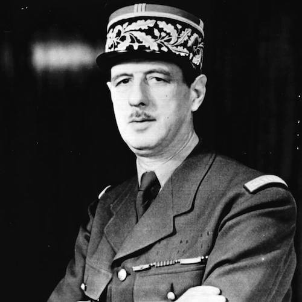
For more information, click here!
I'm General de Gaulle.
This old lion gave me some trouble, he dismissed me from all decisions during the war. But I will call Grand Master Churchill because without him France could not have been what it is now.
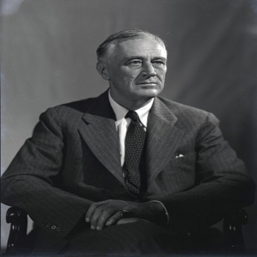
For more information, click here!
I'm Franklin Delano Roosevelt
We had very little agreement on the tactical issues to be taken! But Winston Churchill had millions of ideas, impossible to follow on all. He had to be channeled. His counselors did not sleep much because of him.
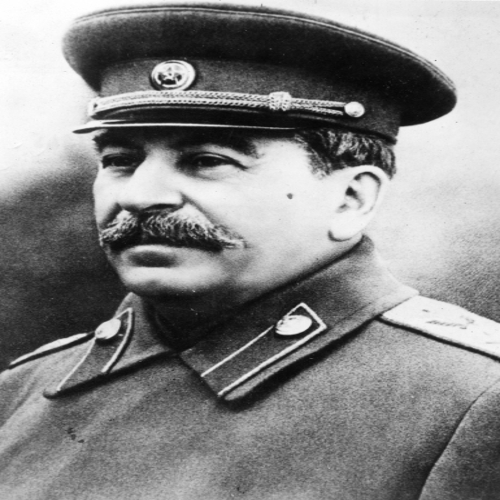
For more information, click here!
I'm Joseph Staline
An exemplary courage. Where other nations collapsed, Churchill was able to make England invincible in the darkest years!
End of career
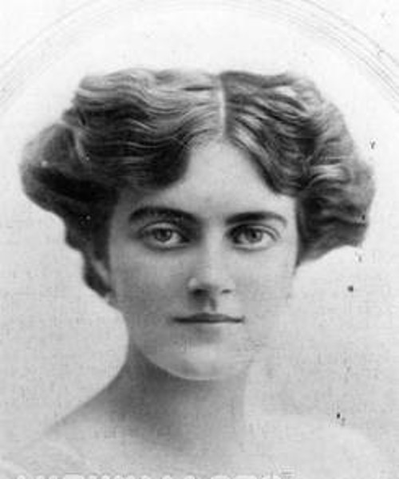
For more information, click here!
I'am Clementine Churchill
My husband is a great man, with such a character. He always did everything to the will. He would never stop working if he had listened.
At the end of the war, your political career was over, you lost the election against the workers' party. How did you take it?
I did not really take it badly. Many times I was described as a politician who deals with crisis situations. But as peace, I was too warlord to govern a country.
But you come back to power as Prime Minister in 1951. The British Empire and its army suffered a decline with the loss of settlements. For you, it was a last gasp?
Yes and no, I did not become prime minister again because of vanity, but I thought that I could still bring something to my nation. I did not want to be the prime minister of the dismantling of the empire. I retired in 1955 because my health was declining.
The fellow citizens of the world would like to know if you are the man of the situation to save our future?
I am a man of crisis, I analyze the situation and always brings a solution to the problem!
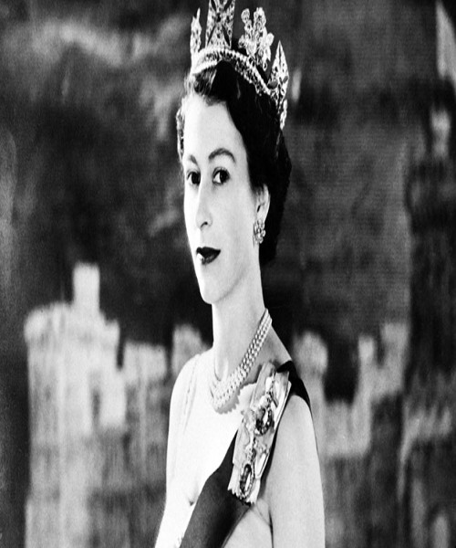
For more information, click here!
I'm Élisabeth II, I'am Queen of England
Churchill was a father to England, and a father to me when mine died. He taught me to be queen. I remember with emotion all our private talks in Buckingham. Unforgettable moments.
I'm Vanessa!
Hello, I'm the journalist of the world !! The future is uncertain, and the trials of our time have no solution. We are in 2070, and our societies dark in chaos. But a hope, a new technology allows us to resurrect a single Great Historical Man to help us. Today we are going to interview a great politician of his time, Welcome to you Master Churchill!